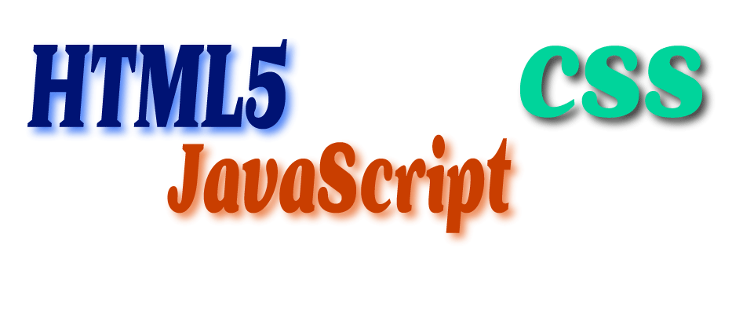

Ohjelmointi on hauskaa ja samalla haastavaa. Olen harrastanut ohjelmointia monia vuosia aina kun minulla on ollut vapaata aikaa opiskelujen ohella. Olen aloittanut ohjelmointia varsinaisesti noin vuosi sitten. Ennen sitä olin oppinut ja kokeillut erilaisia ohjelmointikieliä pintaisesti, kuten PHP, JavaScript, Java, Python ja C. Nyt olen päätänyt keskittyä sekä frontendiin että backendiin oppimalla ensin HTML5, CSS ja JavaScriptia. Backendin kielten oppiminen on seuraava tavoite frontendin jälkeen. Vaikka osaan jo hieman backendin kieliä kuten PHP ja Python, haluan kuitenkin panostaa niihin kunnolla ja soveltaa myös niitä omiin projekteihin.

Tällä hetkellä minua kiinnostaa sellainen käsite kuin Lohkoketju .
Lohkoketju on hajautettu tietokanta, joka mahdollistaa teknologisesti luottamuksen rakentamisen suoraan tuntemattomien tahojen välille ilman kolmatta osapuolta. Lohkoketjuilla on mahdollista seurata lääkeaineiden, -valmisteiden ja lääkkeiden matkaa lääkelogistisessa ketjussa.
Lohkoketjut, tai ainakin Bitcoin, tulivat useimmille tutuksi vuonna 2017. Lohkoketju on ytimeltään vain hajautettu tietokanta. Tapahtumat tallennetaan toisiaan seuraaviin lohkoihin. Ne kiinnittyvät saumattomasti toisiinsa luoden murtamattoman ja muuttumattoman lohkoketjun. Lohkoketjut eivät oikeastaan ole teknologisesti ihmeellisiä. Lohkoketjujen mahdollistamat uudenlaiset sosiaaliset- ja liiketoimintarakenteet sen sijaan ovat.